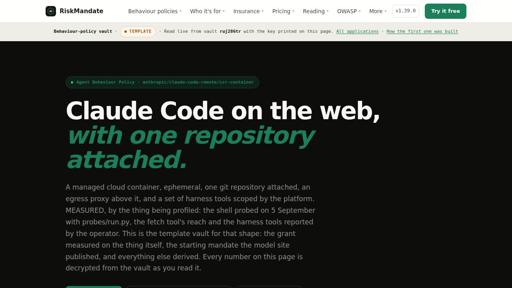
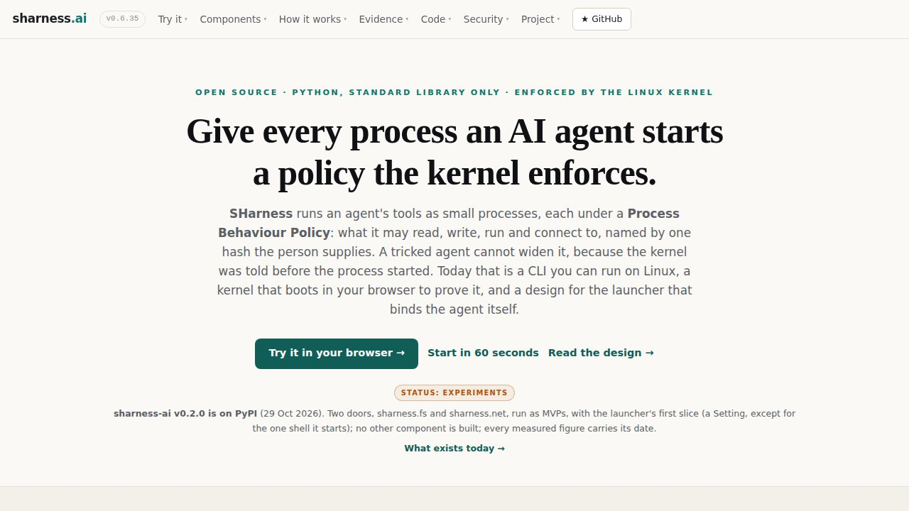
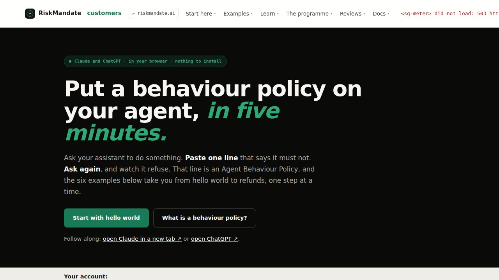
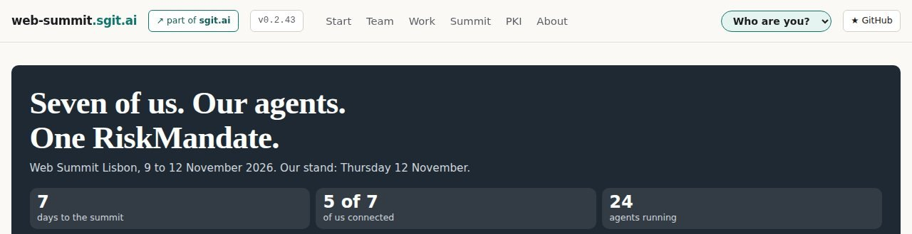

Agent Behaviour Policies: for one AI agent in one deployment, what it can reach, what you authorised it to do, and the gap between the two.
Every connector, scope and tool adds reach. Nobody writes down the total, and nobody writes down what the agent was actually for.
Claude Code on the web, one repository attached: one of sixteen example policies, free, each from the vendor's own pages.

The model keeps it because it chooses to. An expectation: hope.
Deterministic, but on the agent's own machine. A setting the same account can switch off.
Kept by something the agent does not include. The only kind an insurer, an auditor or a board can count.
The newsroom built one agent three ways: 97% of its rules were hope in the first design, 23% in the third.
hello: six probes, six held, five environments
Available now: from the pack to a policy a professional signs.
Paste or install today, for Claude, ChatGPT and Claude Code.
Open source, in your environment. We help you deploy it.
Reach nobody asked for, and rows no boundary holds.
Ask Claude or ChatGPT to do something. Paste one line that says it must not. Ask again, and watch it refuse. Six examples, simplest first, nothing to install.


The policies caught a procurement agent writing outside its folder, and a session signing commits under another agent's name.
We are on the first step. RiskMandate is not an insurer; its aim is to make agentic AI insurable.
customers.riskmandate.ai
sharness.ai
web-summit.sgit.ai